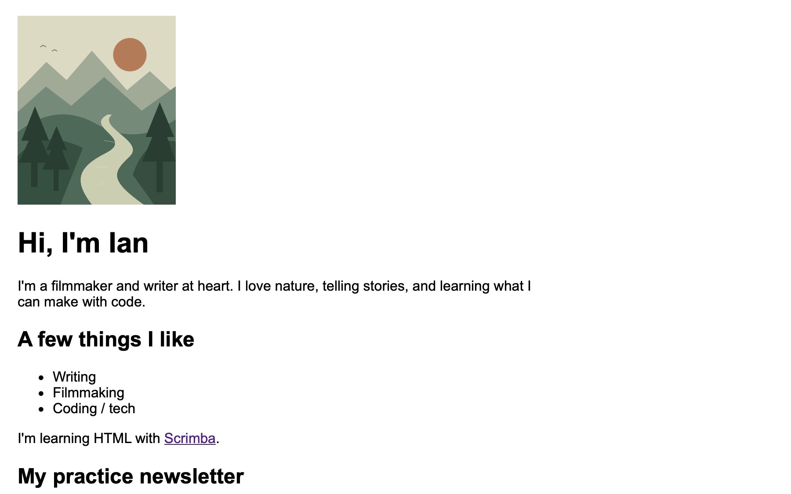
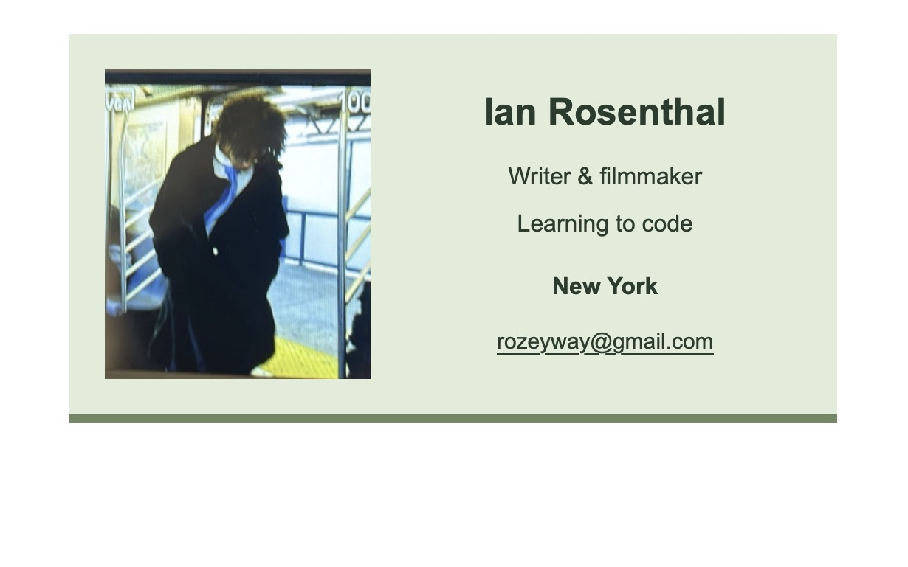
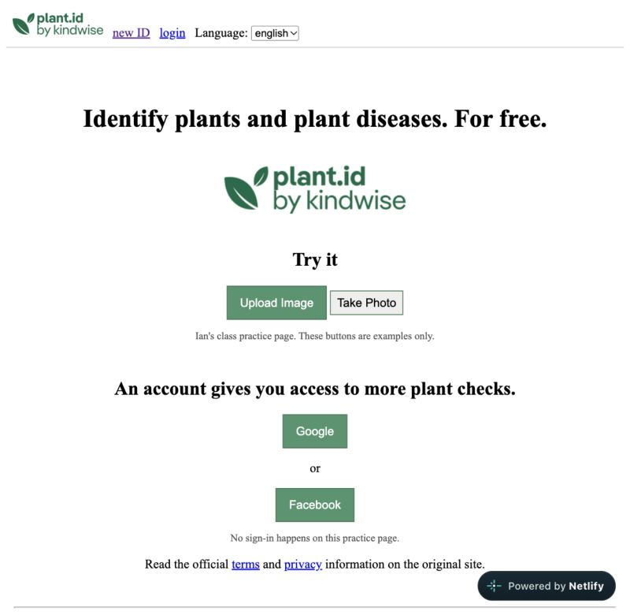
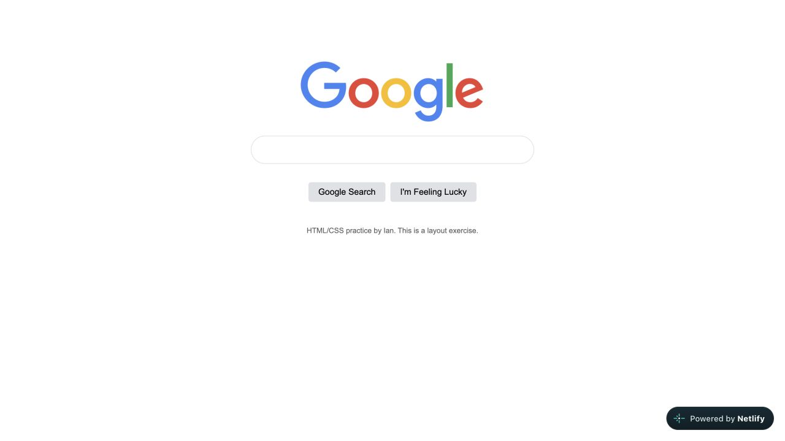
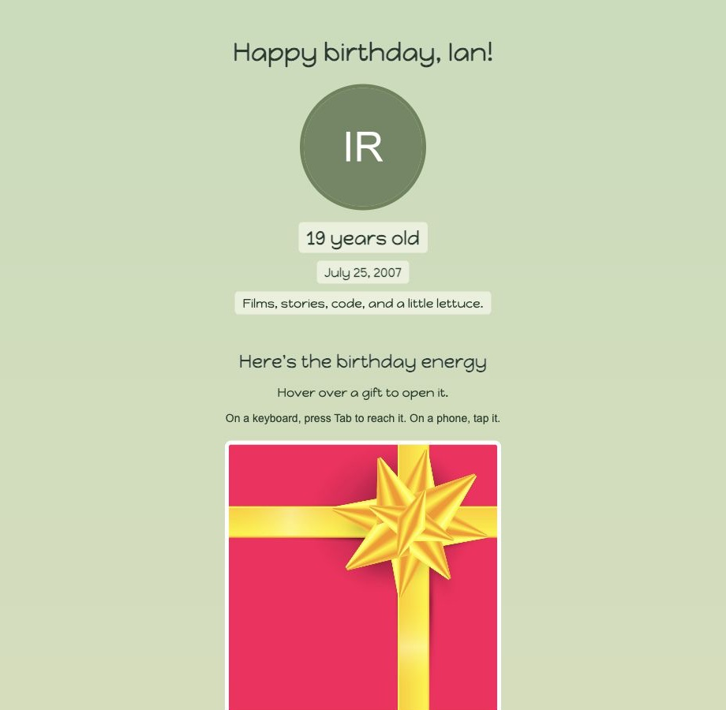
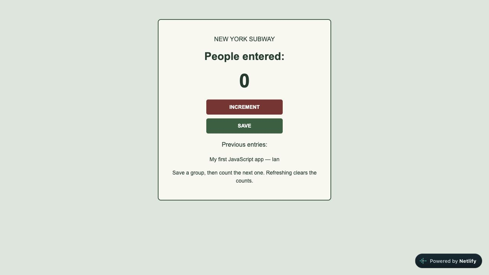
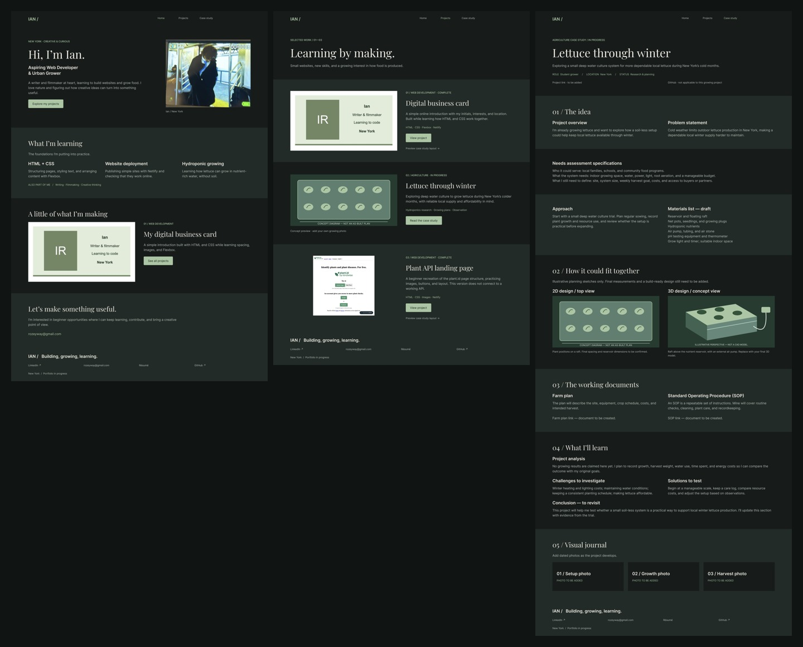
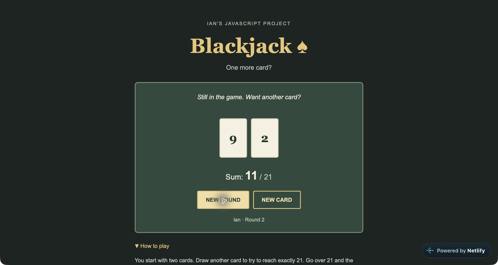

SELECTED WORK / 01—03
Learning by making.
Small websites, new skills, and a growing interest in how food is produced.

01 / WEB DEVELOPMENT · COMPLETE
Digital business card
A simple online introduction, built while learning how HTML and CSS work together.
HTML · CSS · Flexbox · Netlify


 CONCEPT DIAGRAM — NOT AN AS-BUILT PLAN
CONCEPT DIAGRAM — NOT AN AS-BUILT PLAN02 / AGRICULTURE · IN PROGRESS
Lettuce through winter
Exploring deep water culture to grow lettuce during New York’s colder months, with reliable local supply and affordability in mind.
Hydroponics research · Growing plans · Observation

03 / WEB DEVELOPMENT · COMPLETE
Plant API landing page
A beginner recreation of the plant.id page structure, practicing images, buttons, and layout. This version does not connect to a working API.
HTML · CSS · Images · Netlify
MORE THINGS I’VE MADE
Small projects, new skills.
Practice from my coding lessons, from my first HTML page to a JavaScript game.




